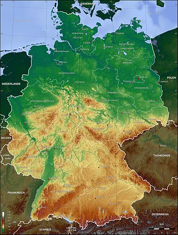
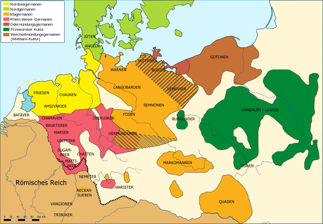
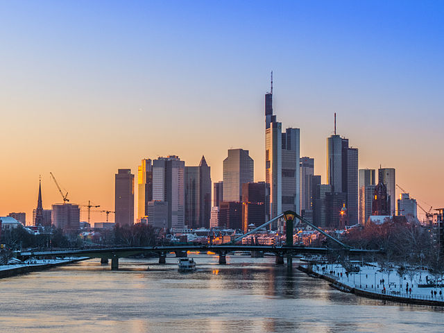
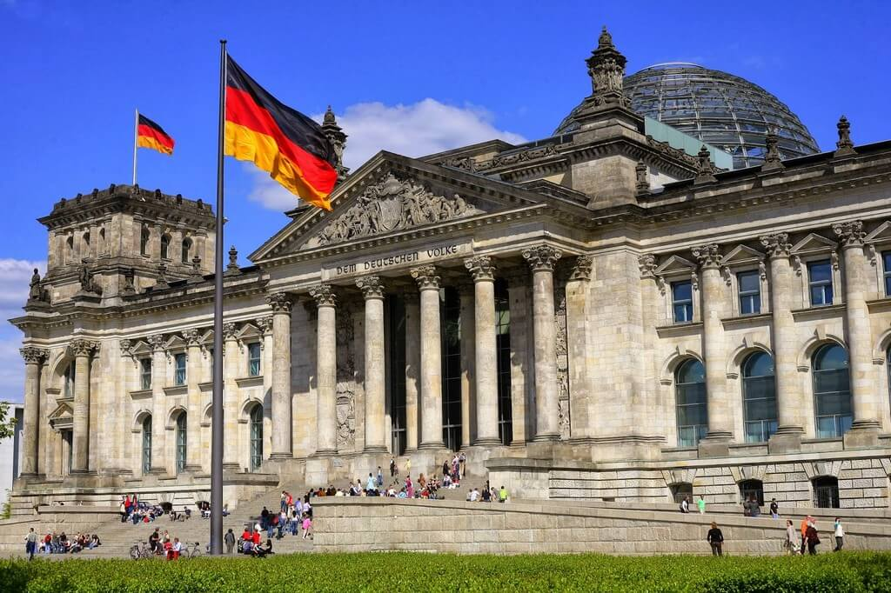
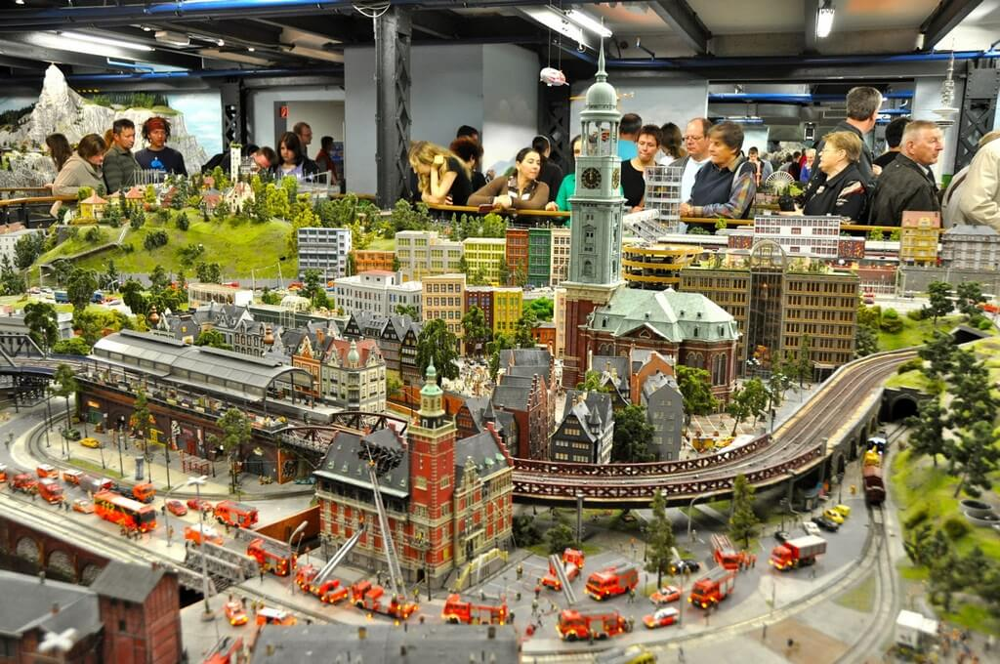

Общие cведения
Герма́ния (нем. Deutschland [ˈdɔʏt͡ʃlant]), официальное название — Федерати́вная Респу́блика Герма́ния (нем. Bundesrepublik Deutschland), ФРГ (нем. BRD) — государство в Центральной Европе. Площадь территории — 357 408,74 км². Численность населения на 30 сентября 2019 года — 83 149 300 жителей. Занимает 19-е место в мире по численности населения (2-е в Европе) и 62-е в мире по территории (8-е в Европе).
Название
Русское название «Германия» происходит от латинского «Germania», которое восходит к сочинениям античных авторов I века новой эры и образовано от этнонима «германцы» (лат. Germanus). Впервые название было употреблено Юлием Цезарем в «Записках о галльской войне» относительно племён, проживавших за Рейном. Само слово, вероятно, имеет нелатинские корни и происходит от кельтского «gair» («сосед»).
По-немецки государство называется «Deutschland» (от прагерм. Þeudiskaz). «Deutsch» (от прагерм. Þeodisk) первоначально означало «имеющий отношение к народу» и подразумевало в первую очередь язык. «Land» означает «земля, страна». Современная форма написания названия страны используется с XV века.
География
Карта Германии с городамиРельеф
Северная часть Германии представляет собой сформировавшуюся во время ледникового периода низменную равнину (Северо-Германская низменность, самая низкая точка — Нойендорф-Саксенбанде в Вильстермарше, 3,54 м ниже уровня моря). Поверхность Северо-Германской низменности сохранила следы древнего оледенения — цепочки невысоких моренных гряд и холмов. Западную часть низменности занимают болотистые низины — марши, образование которых вызвано опусканием платформы. В центральной части страны к низменности с юга примыкают покрытые лесом предгорья, а южнее начинаются Альпы. Самая высокая точка на территории Германии — гора Цугшпитце, 2962 м.
Реки и озера
По территории Германии протекает большое количество рек, наиболее крупными из которых являются: Рейн, Дунай, Эльба, Везер и Одер, реки соединены каналами, наиболее известный канал — Кильский, который соединяет Балтийское и Северное моря. Кильский канал начинается в Кильской бухте и оканчивается в устье реки Эльба. Самое крупное озеро в Германии — Боденское, площадь которого 540 км², а глубина 250 м.
Климат
Германия находится в умеренном климатическом поясе, на севере климат морской, южнее переходит в умеренно-континентальный. С этим связано то, что погода часто носит переменчивый характер. Посреди лета может быть тепло и солнечно, но уже на следующий день может стать холодно и пойти дождь. По-настоящему экстремальные природные явления (сильные засухи, торнадо, штормы, сильный мороз или жара) относительно редки.
Средние температуры июля от +14 в горах до +22 °C в долинах. Средние температуры января от +4 в долинах до −5 °C в горах. Среднегодовая температура +5-+10 °C. Самая низкая температура в Германии составила −46 °C, такой показатель был зарегистрирован в XX веке на юге страны, в горной её части на высоте 1601 м над уровнем моря в районе с координатами около 47ºс. ш. и 12ºв. д. у озера Фунтензе.
Особо охраняемые природные территории
В Германии насчитывается 14 национальных парков, 19 биосферных резерватов, 95 природных парков и множество других охраняемых природных территорий и памятников природы.
История
Первые упоминания о древних германцах появились в трудах древних греков и римлян. Одно из первых упоминаний о германцах относится к 98 году. Оно было сделано римским летописцем Тацитом (лат. Tacitus). Вся территория современной Германии к востоку от Эльбы (славянской Лабы) до X века была заселена славянскими племенами. (см. подробнее: полабские славяне). К XII—XIV векам эти земли постепенно вошли в состав тех или иных немецких государственных образований, составлявших так называемую Священную Римскую Империю. По мере пребывания этих территорий в составе немецких государств за несколько столетий местные славяне постепенно практически полностью были ассимилированы немцами. Этот процесс растянулся до позднего Средневековья и начала нового времени, а местами, с последним, ещё не до конца ассимилированным славянским народом Германии — лужичанами, длится до сих пор.
Традиционно датой основания Германского государства принято считать 2 февраля 962 года: в этот день восточнофранкский король Оттон I был коронован в Риме и стал императором Священную Римскую Империи; эта империя представляла собой конфедерацию земель (нем. Land), каждая из которых имела свою армию и чеканила свою монету. Во главе Священной Римской империи стоял император, избираемый советом курфюрстов, имелся орган, представлявший земли, — Рейхстаг (нем. Reichstag). Каждая из земель являлась сословной монархией с ландтагом (нем. Landtag).
Такое положение сохранялось до 1806 года, когда под давлением Наполеона I было прекращено существование Священную Римскую Империи и её император стал носить только титул императора Австрии. Количество немецких государств значительно сократилось, был создан Рейнский Союз, который также являлся конфедерацией, состоявшей из независимых земель. Во главе Рейнского Союза стоял Федеральный Президент, которым являлся Император Французов, орган представлявший отдельные земли — Бундестаг (нем. Bundestag).
После революции 1848 года, стал назревать конфликт между наращивающей своё влияние Пруссией и Австрийской империей. Это привело к войне 1866 года, в которой Пруссия одержала победу и присоединила ряд немецких княжеств. Германский союз распался.
В 1914 году Германия вступила в Первую мировую войну. 4-9 ноября 1918 года Германию охватило антимонархическое восстание, восставшие стали на уровне предприятий формировать рабочие советы (arbeiterrat).
В конце 1920-х — начале 1930-х гг. набрала влияние Национал-социалистическая немецкая рабочая партия (НСДАП) под руководством Адольфа Гитлера, являвшаяся ещё правее НННП и вытеснившая её. 14 июля 1933 года в Германии была установлена однопартийная система — все партии кроме НСДАП (к которой на тот момент принадлежал канцлер) были запрещены
После поражения Германии во Второй мировой войне в 1945 году страна была оккупирована: в восточных землях и провинциях находилась советская армия, в северо-западных — британская, в юго-западных — французская, в южных — американская, при этом к СССР переходила большая часть Восточной Пруссии, а Польше — практически вся Силезия, Задняя Померания и меньшая часть Восточной Пруссии.
Лишь в 1989 году в результате отстранения марксистско-ленинской группировки от руководства СЕПГ безальтернативные выборы были заменены альтернативными, а 3 октября 1990 года действие Основного закона ФРГ было распространено на восточные земли и ГДР прекратило существование.
Экономика
Германия не обладает большими запасами каких-либо полезных ископаемых. Редкое исключение из этого правила, распространяющегося и на весь Центральноевропейский регион, — уголь, как каменный (Рурский бассейн), так и бурый. Поэтому её экономика сконцентрирована преимущественно на секторе промышленного производства и сфере услуг. Основу экономики (от 70 % до 78 % (2011), в разные годы) составляют услуги, 23—28 % — производство. Также развито производство товаров, машин и различного оборудования, которые составляют значительную часть немецкого экспорта. Агросектор составляет 0,5-1,5 % ВВП, в котором занято такое же количество экономически активного населения страны.
СЕЛЬСЬКОЕ ХОЗЯЙСТВО.Германия обладает высокопроизводительным сельским хозяйством. По объёму сельскохозяйственного производства, производства зерна и продукции животноводства Германия уступает лишь Франции, а по производству молока занимает первое место в рамках ЕС. Германия — страна преимущественно мелких семейных ферм. Эффективность сельскохозяйственного производства в Германии существенно выше среднего уровня по ЕС. Вместе с тем ФРГ отстаёт по средней урожайности кукурузы и сахарной свёклы. В агропромышленном комплексе сельское хозяйство играет подчинённую роль.
Около 70 % товарной продукции сельского хозяйства даёт животноводство. Скотоводство — основная отрасль животноводства в Германии, оно даёт более 2/5 всей товарной продукции сельского хозяйства, причём основная часть приходится на молоко (около ¼)(?). Второе место по значению занимает свиноводство. Самообеспеченность страны по молоку и говядине систематически превышает 100 %, но по свинине составляет менее 4/5.
Большое значение имеет выращивание кормовых корнеплодов (кормовой свёклы и др.), кукурузы на зелёный корм и силос, люцерны, клевера и других кормовых трав. Из масличных наибольшее значение имеет рапс, посевы которого более чем в 10 раз превышают посевы подсолнечника.
Виноградарство превосходит, по товарной продукции, плодоводство и овощеводство, вместе взятые. Виноградники расположены в основном в долинах Рейна, Мозеля и других рек южной Германии, а также в долине Эльбы под Дрезденом.
ПРОМЫШЛЕНОСТЬ.Основными отраслями промышленности являются машиностроительная, электротехническая, химическая, автомобильная и судостроительная, каменноугольная.
Доказанные запасы бурого угля в Германии составляли 40,5 млрд тонн. В основном, они сосредоточены в федеральных землях Северный Рейн — Вестфалия, Бранденбург и Саксония.
Достопримечательности
Германия одна из самых безопасных стран для туризма, это обстоятельство привлекает миллионы путешественников ежегодно. У страны богатая история и культурно-познавательный туризм является одним из главных направлений. Дворцы, крепости и замки – многие из них построены во времена Средневековья. Множество самых разнообразных достопримечательностей являются историческими объектами наследия ЮНЕСКО.
Бранденбургские ворота

Символ столицы Германии, с 1989 года символ воссоединения страны. Построил архитектор Карл Готтгард Лангганс. Проект ворот он делал по мотивам проходов Акрополя. Сооружение в стиле классицизма великолепно сочетается с остальными зданиями на Парижской площади. Украшением ворот является квадрига высотой 6 метров с колесницей, которой управляет Виктория – богиня победы. Барельефы внутренних стен изображают подвиги Геракла.
Рейхстаг
Здание государственного собрания. В длину это монументальное сооружение составляет 137 метров, а в ширину – 103 метра. Построено в стиле итальянского возрождения в 1894 году. Четыре башни здания символизируют немецкие королевства. Их высота – 46 метров. На вершину стеклянного купола можно подняться, оттуда открывается вид на правительственный квартал и на сам город.
Октоберфест

Уникальный, известный на весь мир фестиваль пива. Самое большое фольклорное народное гуляние в мире. Проходит в Мюнхене, ежегодно его посещают около 6 млн. человек. Традиционными на фестивале стали такие мероприятия как костюмированное шествие и шествие хозяев пивных палаток, а также церемония открытия первой пивной бочки. Среди развлечений представлены аттракционы: колесо обозрения, несколько американских горок.
Берлинская стена

Остатки разрушенной Берлинской стены, сохраненные в качестве мемориального комплекса. Часть комплекса – «Окно памяти» посвящена немцам, погибших при бегстве в западный Берлин из восточного. На памятнике из ржавой стали размещены их черно-белые фото в несколько рядов. Часовня Примирения также входит в комплекс. Весь комплекс «Берлинская стена» занимает площадь в 4 га.
Миниатюрная страна чудес (Гамбург)
Самый большой в мире железнодорожный макет. Обязательный пункт для посещения в Гамбурге. Конструкция занимает площадь в 1500 м², на ней размещены более 10 зон разной тематики в масштабе 1:87. Это города и страны, аэропорты и вокзалы, сады и парки. Между ними передвигаются более 1000 поездов, размещены 400 000 фигурок людей и животных. Некоторые детали макета приводятся в действие и управляются кнопками.